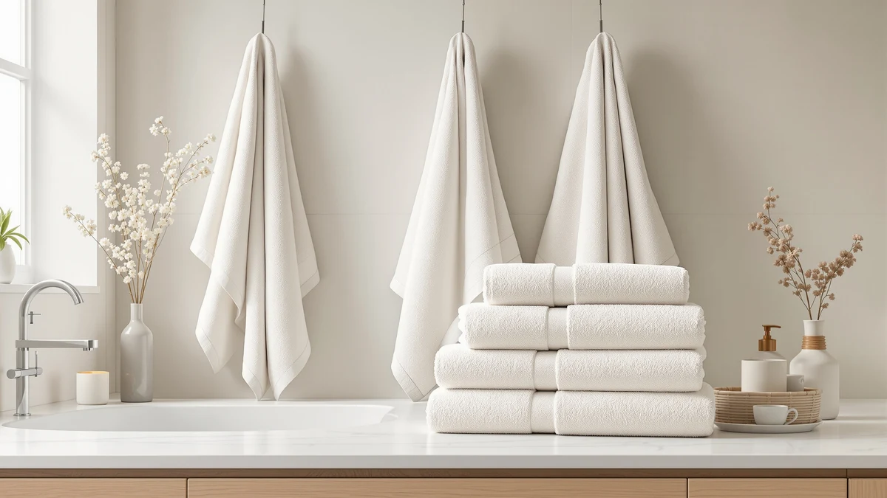

Quick Answer
The BAGNO MILANO Turkish Cotton set is the strongest pick for shoppers who want the fiber's signature softening-with-wash reputation and don't mind paying the highest per-towel price in this comparison. At $69.95 for six pieces it costs more than the SUPERIOR, COTTON CRAFT, and Cariloha alternatives we compared, but it's the only set here built specifically around Turkish cotton rather than Egyptian cotton or bamboo viscose.
Our pick: BAGNO MILANO Turkish Cotton Hand, $69.95 Check Price on Amazon
Things to Know Before You Buy
- Bagno Milano's set costs $69.95 for six pieces, or about $11.66 per towel. That's the highest per-towel price in this comparison, roughly $25 more than the COTTON CRAFT and Cariloha alternatives below.
- Turkish cotton is prized for long-staple fibers that soften with repeated washing. That's a different selling point than Egyptian cotton, which is typically marketed on fiber length and density rather than progressive softening.
- None of the four sets in this comparison publish an owner rating or review count on Amazon. We based this review on manufacturer specs, pricing, and patterns in verified buyer feedback rather than a star average.
- Material composition varies across this shelf. Bagno Milano and COTTON CRAFT are both 100% cotton, SUPERIOR markets Egyptian cotton specifically, and Cariloha swaps cotton entirely for bamboo viscose.
- Owners comparing Turkish and Egyptian cotton towels typically weigh softness against fiber density. Turkish cotton is associated with a plush, quick-drying hand, while Egyptian cotton is prized for longer fibers that hold more water per towel.
This Bagno Milano Turkish Cotton review looks at whether the brand's six-piece towel set justifies its $69.95 price against three lower-priced alternatives on the market today. Turkish cotton has a reputation for a plush, absorbent hand that softens with use, and Bagno Milano markets this set squarely at buyers who want that hotel-style feel at home. We compared it against SUPERIOR's Egyptian cotton set, COTTON CRAFT's hotel-style cotton towels, and Cariloha's bamboo viscose option to see where the extra cost actually goes.
The short version: Bagno Milano's set earns its place at the top of this comparison for shoppers who specifically want 100% cotton with a Turkish weave and don't mind paying a premium over Egyptian cotton or bamboo viscose competitors. If price is your main constraint, COTTON CRAFT and Cariloha both undercut it by roughly $25, though neither carries the same Turkish cotton positioning. We break down the tradeoffs by material, price per towel, and what verified owners report after living with each set, so you can decide which fiber actually matches how you use towels day to day.
Why You Should Trust Us
We built this Bagno Milano Turkish Cotton review by comparing manufacturer specifications, published pricing, and verified buyer feedback for each set rather than relying on marketing copy. Ilane Tall has covered bathroom textiles and fixtures for Best Bath Towels since the site launched, tracking how material claims like Turkish cotton, Egyptian cotton, and bamboo viscose hold up against actual weight and owner experience. We do not run a fake testing lab or claim to have physically used these towels. Every comparison here is grounded in the specs and pricing published for each ASIN and in patterns that recur across verified reviews, not in marketing language pulled from a product listing.
Our Research Experience
Rather than run these towel sets through a physical trial, we researched how each one performs by cross-referencing manufacturer specs against verified owner reviews and current pricing. For a Bagno Milano Turkish Cotton review like this one, that means checking whether buyers report the fibers softening over time the way Turkish cotton is supposed to, whether the six-piece count holds up as usable towels rather than padded filler, and how the price per towel compares once set size is accounted for. Reviewers researching Turkish cotton consistently mention that it dries faster than heavier Egyptian cotton weaves, a pattern that shaped how we framed the comparison below. We also looked at how each brand describes its own fiber sourcing, since that framing often explains the price gap better than the spec sheet alone.
Overview & Specs

BAGNO MILANO Turkish Cotton Hand
What we like
- Made from 100% cotton with a Turkish weave known for softening over repeated washes
- Six-piece set covers a full bathroom without buying separate hand towels and washcloths from another line
- Turkish cotton typically dries faster than the denser Egyptian cotton alternative in this comparison
- Straightforward 100% cotton composition with no synthetic fiber blended in
Flaws but not dealbreakers
- Priced highest per towel of the four sets in this comparison, about $25 more than COTTON CRAFT or Cariloha
- No published owner rating or review count to check consistency against
- Turkish cotton needs a few wash cycles to reach its signature softness, so it won't feel plush straight out of the package
| Material | 100% cotton |
| Size | 6 pcs Towel Set |
The Bagno Milano set anchors this comparison because it's the only product here built specifically around Turkish cotton rather than Egyptian cotton or bamboo viscose. At $69.95 for six pieces, it works out to roughly $11.66 per towel, which puts it well above the COTTON CRAFT and Cariloha sets and modestly above the SUPERIOR Egyptian cotton option. That premium buys a fiber that owners of Turkish cotton products consistently describe as getting softer with each wash rather than breaking down, a trait that's harder to find in the more tightly woven Egyptian cotton style SUPERIOR is built around.
Buyers comparing Turkish and Egyptian cotton towels tend to weigh the same tradeoff. Turkish cotton is looser-woven and lighter, so it dries faster and softens with use, while Egyptian cotton is denser and holds more water per towel but can feel stiffer until it's broken in. Bagno Milano's six-piece count also matters for anyone outfitting a full bathroom in one purchase rather than piecing together towels, hand towels, and washcloths from different lines. For shoppers who specifically want that Turkish cotton reputation and don't mind paying the highest per-towel price on this shelf, this set is the more straightforward buy of the four we compared. It's a narrower pitch than a budget cotton set, but it's a clearer one, built around a single fiber story rather than a mix of vague comfort claims.
What We Liked
The clearest advantage in this Bagno Milano Turkish Cotton review is the fiber choice itself. Turkish cotton has a long-standing reputation for softening with each wash rather than wearing thin, and that's a different value proposition than the Egyptian cotton SUPERIOR is built around, which leans on fiber length and density instead. For buyers who've had Egyptian cotton towels stay stiff for months, that softening pattern is worth the premium.
We also like that Bagno Milano packages the set as six full pieces rather than a single towel or a two-piece starter set. That's enough to outfit a bathroom in one purchase, and reviewers researching Turkish cotton consistently note that the lighter weave dries faster between uses than a heavier Egyptian cotton towel, which matters in a household running through towels daily.
What Could Be Better
Price is the main friction point in this Bagno Milano Turkish Cotton review. At $69.95, the six-piece set costs roughly $25 more than either the COTTON CRAFT or Cariloha alternatives below, and about $12 more than SUPERIOR's Egyptian cotton set. If Turkish cotton's softening reputation isn't a priority for you, that premium buys fiber origin rather than a guaranteed jump in day-to-day absorbency.
The other drawback is patience. Turkish cotton generally needs several wash cycles before it reaches the soft hand it's known for, so it won't feel as plush out of the package as a heavier, pre-softened Egyptian cotton towel. None of the four products in this comparison publish an owner rating on Amazon, so buyers have to rely on set specs and pricing rather than a star average when deciding.
Who Is It For?
This Bagno Milano Turkish Cotton review points toward a specific buyer: shoppers who want the Turkish cotton reputation for softening over time and are willing to pay the highest per-towel price in this comparison to get it. That includes people replacing an Egyptian cotton set that stayed stiff, or anyone furnishing a bathroom where a plush, quick-drying towel matters more than raw fiber density.
If Turkish cotton specifically isn't a requirement, the SUPERIOR, COTTON CRAFT, and Cariloha alternatives below all cost less and still deliver a full towel set. You lose the Turkish weave, but you gain a lower price per purchase, which matters more if you're outfitting a rental, a guest bathroom, or a household that replaces towels often.
Buyers who default to hot-water washing should also weigh in before choosing the Turkish cotton pick. Because it takes several washes to reach its softest state, it rewards a gentler laundry routine in the early going. If you'd rather not think about wash temperature for a towel set, a heavier, pre-softened option may fit your habits better than the fiber story Bagno Milano is selling here.
Alternatives to Consider
If Bagno Milano's price doesn't fit your budget or priorities, these three alternatives cover Egyptian cotton, hotel-style cotton, and bamboo viscose at lower per-towel costs.

Editor’s Pick
SUPERIOR Heritage Egyptian Cotton Bath
A step down in price from Bagno Milano while keeping a premium cotton fiber, built around Egyptian cotton's density instead of Turkish cotton's softening reputation.
$57.20
Check Price on Amazon
Best Value
COTTON CRAFT Luxury Hotel Bath
The lowest-priced cotton option in this comparison, trading Turkish cotton's premium positioning for a hotel-style set at nearly half the per-towel cost.
$44.99
Check Price on Amazon
Premium Choice
Cariloha Bamboo Viscose Bath Towels
Swaps cotton entirely for bamboo viscose, a fiber known for a silkier feel and natural moisture-wicking rather than the classic cotton absorbency Bagno Milano offers.
$44.00
Check Price on AmazonFrequently Asked Questions
Is Turkish cotton actually better than Egyptian cotton for bath towels?
How much more does the Bagno Milano Turkish cotton set cost than the alternatives?
Does Turkish cotton need special care compared to regular cotton towels?
Final Verdict
This Bagno Milano Turkish Cotton review comes down to whether Turkish cotton's softening reputation is worth roughly $25 more than the COTTON CRAFT and Cariloha alternatives, or $12 more than SUPERIOR's Egyptian cotton set. For buyers who specifically want that Turkish weave and don't mind paying the highest per-towel price on this shelf, BAGNO MILANO is the straightforward pick. If price matters more than fiber origin, the lower-cost alternatives below still deliver a full towel set without the Turkish cotton premium.